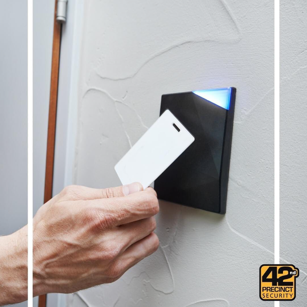
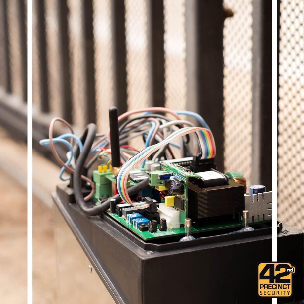

- Established in 1992 as Max Security & Residential Patrols to provide a superior and pro-active Security Service in the Kyalami / Blue Hills area. Major emphasis was placed on professional and comprehensive "after-sale" service, which soon became a company trademark.
- Our client base was initially very small and necessitated many long hours of door-to-door canvassing to be able to provide the most comprehensive service to all clients.
- Rapid growth of the client base followed in a short period of time because of the increasing success of the company as a major deterrent and significant role-player in the fight against crime.
- Referrals from existing clients became common and numerous new clients were recruited as a result of “word of mouth" communication. Client's previously linked to other well-known Response Services within the area also played a significant role in boosting the client base as they all opted for the services of Max Security instead.
- Max Security Guards evolved during this period to satisfy an increasing need for the ongoing provision of permanent and temporary on-site Security Officers.
- Continued expansion of both the response and guard’s divisions, including close liaison and involvement with all local crime prevention bodies, allowed the company to become the dominant Security Service in the area.
- By early 1997 the company was very well established and had already earned an extremely good reputation amongst the community who knew they could rely on Max Security to provide an efficient and reliable service.
- It was then decided (1997) that the Guards Division would benefit as a separate entity and therefore the sale of the Response Division to another Response Company was concluded. This allowed Max Security Guards the opportunity to expand its operation into other areas previously restricted by the initial limited response target area.
- The separation would also allow increased focus of attention and resources to be directed towards the Guards Operation alone and hence enhance the already efficient and reliable service that all existing clients had come to appreciate.
- The expansion of Max Security Guards could now continue in other areas as a very real and viable option for prospective clients.
- In 2002 a name change was applied for and 42nd Precinct Security was born. All clients accepted and embraced the name change and continued to be valuable customers of this company.
- The ownership of the company changed March 2004.The company is wholly owned by Allan Millard, MBA, who is the incumbent Managing Director, who has been at the helm since them.
- It was during 2004 that the 42nd Precinct logo was changed to suite customer needs and requirements. We listened to the customer who informed us that the logo was not very clear or distinctive. We have now proudly modelled our logo to be clear and distinctive, and introduced this to the market in December 2004.
- In 2005, we established the Electronics Solutions Division, we established a team to assist the variety of complexes that wanted electronic solutions and maintenance. We have technicians who install alarms, beams, electric fencing, gates and motors, and we offer maintenance contracts.
- We have an importers license, which allows us to bring in products from anywhere in the world if they are not locally available.
- 2012 establishment of an armed response division incorporating RF and GPRS technology.
- 2012 establishment of offsite monitoring
- April 2012 Introduction of the new smarter look formal uniform
- September 2012 Sponsor Communication for Ferndale resident’s association
- 1st November 2012 start armed response patrols in Randburg
- 14th November 2012 Start Security Committee
- Chosen as Security Company of choice for FVRA, which later disbanded to form Ferndale Residents Association
Hover/Click to flip the card
ALLAN MILLARD
Managing Director
- 16 Basil Street (cnr Oxford)
- Ferndale, Randburg
- O: +27 11 791 6340
- F: +27 11 791 0285
- C: +27 83 650 0313
- E: allan@42ndprecinct.co.za
-
GUARDING DIVISION
- Road Closures & Boomed Areas
- Security Cashiers
- Doormen
- Schools & Shopping
Centres - Houses, Flats
- Housing Complexes
- Temporary Building Sites
- Security On Request
- VIP Protection
- Event Management
-
ELECTRONIC SOLUTIONS
- CCTV Systems & Intercoms
- Time & Attendance
- GSM Modules
- Alarm Sstems - Wired/Wireless
- Perimeter Detection
- Electric Fencing & Gate Motors
- Access Control
- Armed Response
- Armed Bar
Mission Statement
To grow organically and promote innovation. We will deliver services to our clients upholding core values of Honesty, Integrity, and Trust (HIT). In addition, we will strive to become recognized as a reliable leading supplier of quality pro-active security services.


Our History
Clientele
Forty Second Precinct Security offers services to all residential, Industrial, or commercial clients.
We will repair or replace all electronic devices within reason, with the added flexibility to deploy guards at short notice in a time of need.
Types of work we do which are varied from factories, shopping centres, high schools, road closures for suburbs, and complexes. We also do work for film sets, farmers, and building sites. We also provide security cashiers and doormen.